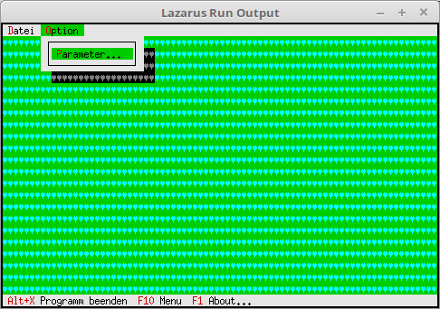

11 Optische-Gestaltung
02-Desktop-Hintergrund Farbe

Wen man die Farbe des Hintergrundes änder will, ist ein wenig komplizierter als nur das Zeichen.
Dazu muss man beim Object TBackground die Funktion GetPalette überschreiben.
Für das Object TBackground wird ein Nachkomme erzeugt, welcher eine neue GetPalette Funktion bekommt.
type
PMyBackground = ^TMyBackground;
TMyBackground = object(TBackGround)
function GetPalette: PPalette; virtual; // neu GetPalette
end;
In der neuen Funktion wird eine andere Palette zugeordnet.
function TMyBackground.GetPalette: PPalette;
const
P: string[1] = #74;
begin
Result := @P;
end;
Der Konstruktor sieht fast gleich aus wie beim Hintergrundzeichen.
Einziger Unterschied anstelle von PBackGround wird PMyBackground genommen.
constructor TMyApp.Init;
var
R:TRect;
begin
inherited Init; // Vorfahre aufrufen
GetExtent(R);
DeskTop^.Insert(New(PMyBackground, Init(R, #3))); // Hintergrund einfügen.
end;